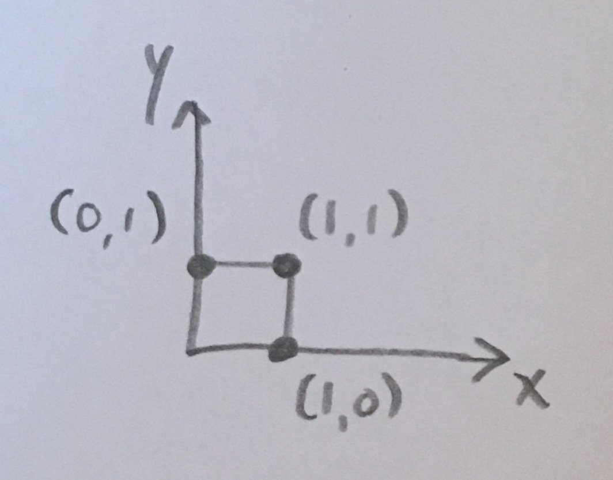

partition¶
Sage has a builtin Partition object. This module adds extra useful functions for partitions:
AUTHORS:
- Matthew Lancellotti (2018): Initial version
-
partition.boundary(ptn)[source]¶ Return the integer coordinates of points on the boundary of
ptn.The boundary of a partition is the set \(\{ \text{NE}(d) \mid \forall d\:\text{diagonal} \}\). That is, for every diagonal line \(y = x + b\) where \(b \in \mathbb{Z}\), we find the northeasternmost (NE) point on that diagonal which is also in the Ferrer’s diagram (here, the Ferrer’s diagram is interpreted as 1 x 1 cells in the Euclidean plane).
The boundary will go from bottom-right to top-left in the French convention.
EXAMPLES:
The partition (1)
has boundary [(1, 0), (1, 1), (0, 1)]:
sage: boundary(Partition([1])) [(1,0), (1,1), (0,1)]
The partition (3, 1)
has boundary [(3, 0), (3, 1), (2, 1), (1, 1), (1, 2), (0, 2)]:
sage: boundary(Partition([3, 1])) [(3,0), (3,1), (2,1), (1,1), (1,2), (0,2)]
See also
k_rim(). You might have been looking fork_boundary()instead.
{kind=link}
{kind=link}
-
partition.has_k_rectangle(ptn, k)[source]¶ A partition
ptnhas a \(k\)-rectangle if it’s Ferrer’s diagram contains \(k-i+1\) rows (or more) of length \(i\) (exactly) for any \(i\) in \([1, k]\).This is mainly a helper function for
is_k_reducible()andis_k_irreducible(), the only difference between this function andis_k_reducible()being that this function allows any partition as input whileis_k_reducible()requires the input to be \(k\)-bounded.EXAMPLES:
The partition [1, 1, 1] has at least 2 rows of length 1:
sage: is_k_reducible(Partition([1, 1, 1]), 2) True
The partition [1, 1, 1] does not have 4 rows of length 1, 3 rows of length 2, 2 rows of length 3, nor 1 row of length 4:
sage: is_k_reducible(Partition([1, 1, 1]), 4) False
See also
-
partition.has_rectangle(ptn, h, w)[source]¶ A partition
ptnhas an \(h\) x \(w\) rectangle if it’s Ferrer’s diagram has \(h\) (or more) rows of length \(w\) (exactly).EXAMPLES:
sage: has_rectangle([3, 3, 3, 3], 2, 3) True sage: has_rectangle([3, 3], 2, 3) True sage: has_rectangle([4, 3], 2, 3) False sage: has_rectangle([3], 2, 3) False
See also
-
partition.is_k_bounded(ptn, k)[source]¶ Returns
Trueif and only if the partitionptnis bounded byk.EXAMPLES:
sage: is_k_bounded(Partition([4, 3, 1]), 4) True sage: is_k_bounded(Partition([4, 3, 1]), 7) True sage: is_k_bounded(Partition([4, 3, 1]), 3) False
-
partition.is_k_core(ptn, k)[source]¶ Returns a boolean saying whether or not the Partition
ptnis ak-core.EXAMPLES:
In the partition (2, 1), a hook length of 2 does not occur, but a hook length of 3 does:
sage: is_k_core(Partition([2, 1]), 2) True sage: is_k_core(Partition([2, 1]), 3) False
See also
Core()
-
partition.is_k_irreducible(ptn, k)[source]¶ A \(k\)-bounded partition is \(k\)-irreducible if it’s Ferrer’s diagram does not contain \(k-i+1\) rows (or more) of length \(i\) (exactly) for every \(i \in [1, k]\).
(Also, a \(k\)-bounded partition is \(k\)-irreducible if and only if it is not \(k\)-reducible.)
EXAMPLES:
The partition [1, 1, 1] has at least 2 rows of length 1:
sage: is_k_irreducible(Partition([1, 1, 1]), 2) False
The partition [1, 1, 1] does not have 4 rows of length 1, 3 rows of length 2, 2 rows of length 3, nor 1 row of length 4:
sage: is_k_irreducible(Partition([1, 1, 1]), 2) True
See also
-
partition.is_k_reducible(ptn, k)[source]¶ A \(k\)-bounded partition is \(k\)-reducible if it’s Ferrer’s diagram contains \(k-i+1\) rows (or more) of length \(i\) (exactly) for some \(i \in [1, k]\).
(Also, a \(k\)-bounded partition is \(k\)-reducible if and only if it is not \(k\)-irreducible.)
EXAMPLES:
The partition [1, 1, 1] has at least 2 rows of length 1:
sage: is_k_reducible(Partition([1, 1, 1]), 2) True
The partition [1, 1, 1] does not have 4 rows of length 1, 3 rows of length 2, 2 rows of length 3, nor 1 row of length 4:
sage: is_k_reducible(Partition([1, 1, 1]), 4) False
See also
-
partition.is_strictly_decreasing(li)[source]¶ Return whether every term in the iterable
liis greater than the following term.Used internally to check when a
Partition,Composition, or list is strictly decreasing.EXAMPLES:
sage: is_strictly_decreasing([3, 2, 1]) True sage: is_strictly_decreasing([3, 2, 2]) False sage: is_strictly_decreasing([3, 2, 3]) False
-
partition.is_symmetric(ptn)[source]¶ Given a partition
ptn, detect ifptnequals its own transpose.EXAMPLES:
sage: is_symmetric(Partition([2, 1])) True sage: is_symmetric(Partition([3, 1])) False
-
partition.is_weakly_decreasing(li)[source]¶ Return whether every term in the iterable
liis greater than or equal to the following term.Used internally to check when a
Partition,Composition, or list is weakly decreasing.EXAMPLES:
sage: is_weakly_decreasing([3, 2, 1]) True sage: is_weakly_decreasing([3, 2, 2]) True sage: is_weakly_decreasing([3, 2, 3]) False
-
partition.k_column_lengths(ptn, k)[source]¶ Given a partition, return it’s \(k\)-column-shape.
This is the ‘column’ analog of
k_row_lengths().EXAMPLES:
sage: k_column_lengths(Partition([6, 1]), 2) [1, 0, 0, 0, 1, 1] sage: k_column_lengths(Partition([4, 4, 4, 3, 2]), 2) [1, 1, 1, 2]
See also
k_row_lengths(),k_boundary(),SkewPartition.row_lengths(),SkewPartition.column_lengths()
-
partition.k_rectangle_dimension_list(k)[source]¶ Return the list of dimension pairs \((h, w)\) such that \(h + w = k + 1\).
This exists mainly as a helper function for
partition.has_rectangle()andk_shape.is_reducible().EXAMPLES:
sage: k_rectangle_dimension_list(3) [(3, 1), (2, 2), (1, 3)]
-
partition.k_rim(ptn, k)[source]¶ Return the
k-rim ofptnas a list of integer coordinates.The \(k\)-rim of a partition is the “line between” (or “intersection of”) the \(k\)-boundary and the \(k\)-interior. (Section 2.3 of [genocchi])
It will be output as an ordered list of integer coordinates, where the origin is \((0, 0)\). It will start at the top-left of the \(k\)-rim (using French convention) and end at the bottom-right.
EXAMPLES:
Consider the partition (3, 1) split up into its 1-interior and 1-boundary:
The line shown in bold is the 1-rim, and that information is equivalent to the integer coordinates of the points that occur along that line:
sage: k_rim(Partition([3, 1]), 1) [(3,0), (2,0), (2,1), (1,1), (0,1), (0,2)])
See also
k_interior(),k_boundary(),boundary()
{kind=link}
-
partition.k_row_lengths(ptn, k)[source]¶ Given a partition, return it’s \(k\)-row-shape.
This is equivalent to taking the \(k\)-boundary of the partition and then returning the row-shape of that. We do not discard rows of length 0. (Section 2.2 of [mem])
EXAMPLES:
sage: k_row_lengths(Partition([6, 1]), 2) [2, 1] sage: k_row_lengths(Partition([4, 4, 4, 3, 2]), 2) [0, 1, 1, 1, 2]
See also
k_column_lengths(),k_boundary(),SkewPartition.row_lengths(),SkewPartition.column_lengths()
-
partition.k_size(ptn, k)[source]¶ Given a partition
ptnand ak, return the size of the \(k\)-boundary.This is the same as the length method
sage.combinat.core.Core.length()of thesage.combinat.core.Coreobject, with the exception that here we don’t requireptnto be a \(k+1\)-core.EXAMPLES:
sage: Partition([2, 1, 1]).k_size(1) 2 sage: Partition([2, 1, 1]).k_size(2) 3 sage: Partition([2, 1, 1]).k_size(3) 3 sage: Partition([2, 1, 1]).k_size(4) 4
See also
k_boundary(),SkewPartition.size()
-
partition.next_within_bounds(p, min=[], max=None, type=None)[source]¶ Get the next partition lexicographically that contains min and is contained in max.
INPUTS:
p– The Partition.min– (default[], the empty partition) The ‘minimum partition’ thatnext_within_bounds(p)must contain.max– (defaultNone) The ‘maximum partition’ thatnext_within_bounds(p)must be contained in. If set toNone, then there is no restriction.type– (defaultNone) The type of partitions allowed. For example, ‘strict’ for strictly decreasing partitions, orNoneto allow any valid partition.
EXAMPLES:
sage: m = [1, 1] sage: M = [3, 2, 1] sage: Partition([1, 1]).next_within_bounds(min=m, max=M) sage: [1, 1, 1] sage: Partition([1, 1, 1]).next_within_bounds(min=m, max=M) sage: [2, 1] sage: Partition([2, 1]).next_within_bounds(min=m, max=M) sage: [2, 1, 1] sage: Partition([2, 1, 1]).next_within_bounds(min=m, max=M) sage: [2, 2] sage: Partition([2, 2]).next_within_bounds(min=m, max=M) sage: [2, 2, 1] sage: Partition([2, 2, 1]).next_within_bounds(min=m, max=M) sage: [3, 1] sage: Partition([3, 1]).next_within_bounds(min=m, max=M) sage: [3, 1, 1] sage: Partition([3, 1, 1]).next_within_bounds(min=m, max=M) sage: [3, 2] sage: Partition([3, 2]).next_within_bounds(min=m, max=M) sage: [3, 2, 1] sage: Partition([3, 2, 1]).next_within_bounds(min=m, max=M) == None sage: True
See also
next()
-
partition.to_k_core(ptn, k)[source]¶ Shift the rows of
ptnminimally in order to create a \(k\)-core.Returns a
Partitionobject, not aCoreobject.If you plug a \(k\)-bounded partition into this function and use \(k+1\) as the input constant, then this is the well-known bijection between \(k\)-bounded partitions and \(k+1\)-cores.
EXAMPLES:
sage: to_k_core([1, 1], 3) [1, 1] sage: to_k_core([2, 1], 3) [3, 1]